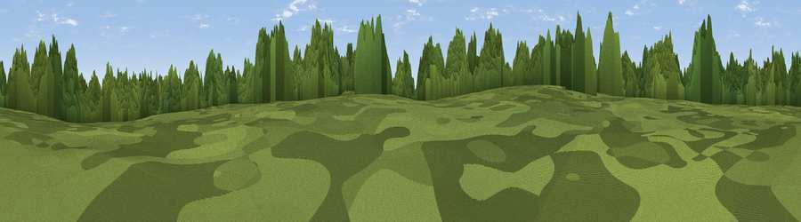

Lizard Hill
#39285 in England · top 87% of its area beats it · near ShifnalThe view, rendered

A 360° render of this exact spot computed from the terrain model, tree cover and land cover — summer colours, afternoon light, calibrated against photographs of famous viewpoints. Real trees, hedges and buildings will differ in detail.
The panorama
Grey silhouette: terrain skyline in each direction (720 bearings, Earth curvature and refraction included). Dashed green: skyline with trees (+15 m) and buildings (+8 m) as obstacles. Blue strip: how far the ground is visible on each bearing.
Where the view opens
Wedge length = distance to the farthest visible ground on that bearing (vegetation-aware). Rings at 10, 25 and 50 km.
What fills the view
48% cropland · 31% woodland · 19% grassland · 2% built-up
Angular shares of the visible panorama (visual magnitude), not map area. Landscape diversity 0.49 (0–1 Shannon).
Key numbers
More beautiful places nearby
The staircase of upgrades: each row has a higher view potential than everything closer. Driving times are estimates from straight-line distance, calibrated against real road routing — check an actual route before setting out.
| Place | Direction | Drive | Score |
|---|---|---|---|
| Viewpoint near Shifnal | W · 0 km | ~1 min | 50.9 |
| Viewpoint near Weston under Lizard | E · 3 km | ~7 min | 53.7 |
| Redhill | WNW · 5 km | ~10 min | 61.5 |
| Viewpoint near Priorslee Village | WNW · 5 km | ~11 min | 70.4 |
| The Ercall | W · 13 km | ~23 min | 79.4 |
| Viewpoint near Little Wenlock | W · 14 km | ~25 min | 84.2 |
| The Wrekin | W · 14 km | ~26 min | 85.0 |
| Viewpoint near Little Wenlock | W · 15 km | ~26 min | 86.6 |
52.68249, -2.33843 · source: osm peak · position refined by local search. Computed location — check access rights before visiting.